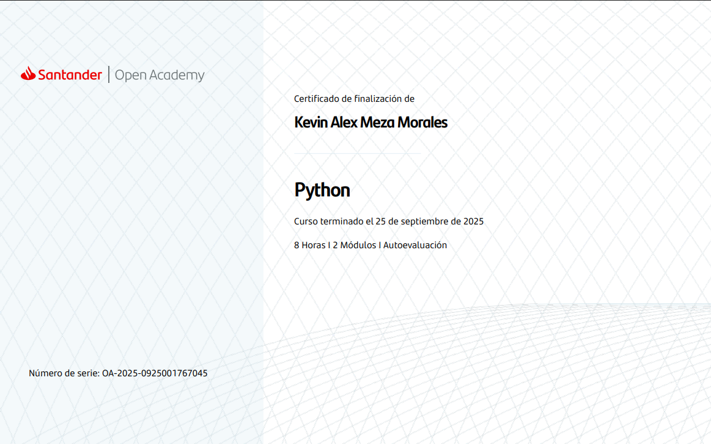
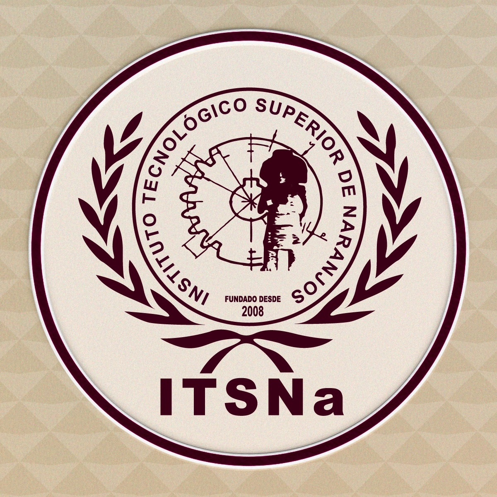
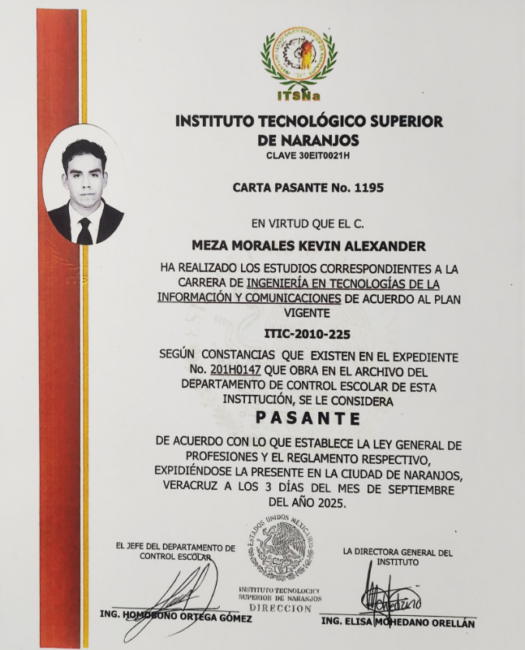
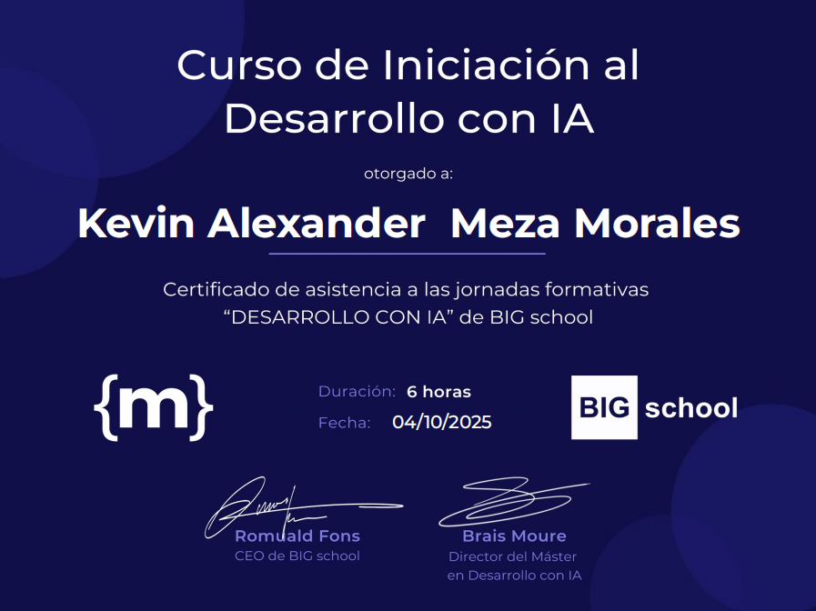
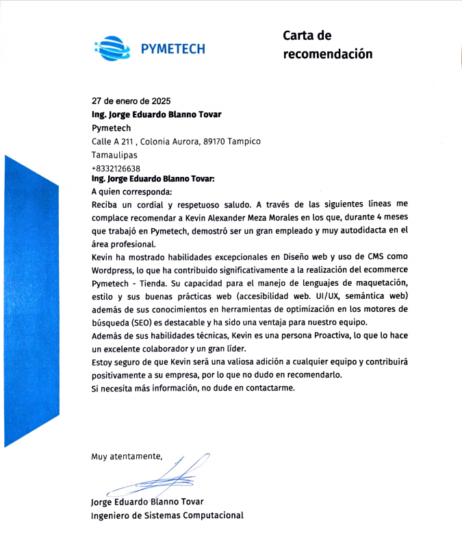

Tienda PYMETECH
Desarrollo de eCommerce para empresa tecnológica en Tampico, con diseño responsive, SEO y personalización en WordPress.
WordPress · WooCommerce · CSS · UI/UX · HTML · JS · PHP Ver proyecto
Apasionado por el mundo Tecnológico, soluciones modernas y plasmas mis ideas en código.
Hola, soy Kevin Alexander Meza Morales, egresado de la Ingeniería en Tecnologías de la Información y Comunicaciones (TIC´s) del Instituto Tecnológico Superior de Naranjos.
Renacido cual ave Fénix tengo actualmente 22 años, aunque dicen que la edad es atemporal, me apasiona el desarrollo web, la investigación y la vida saludable. Ojo, no se confundan, no soy una rata de laboratorio, también me gusta hacer ejercicio, dibujar, tocar piano y cocinar, pero sobre todo aprender cosas nuevas.
¡Tengo total iniciativa para aprender nuevas tecnologías y mantenerme actualizado con el mercado y tendencias. Compruébalo! 🧠⚡
Desarrollo de eCommerce para empresa tecnológica en Tampico, con diseño responsive, SEO y personalización en WordPress.
WordPress · WooCommerce · CSS · UI/UX · HTML · JS · PHP Ver proyectoDesarrollo de un e-commerce inspirado en una tienda de la vida real; al ser mi primer proyecto NO es semántico, no es accesible, no es responsive y, aunque en su momento lo 'clavé' como un proyecto full stack, realmente fue todo front y lo demás pura labia. Es mi bebé, con el que comencé todo, le tengo un especial cariño y me doy cuenta lo mucho que he mejorado en esto. Todo es un coctél de cosas, no sabes en donde enfocar tu vista por tantos eventos que acontecen en el momento pero, no me juzguen, fue mi primer contacto con un desarrollo front-end.
CSS · HTML · JS · IAProyecto desarrollado en conjuto con el departamento de investigación de mi universidad | Desarrollo de un dispositivo de monitoreo del ritmo cardíaco utilizando como corazón la placa Esp32 y el sensor de monitoreo cardíaco. El sistema cuenta con sus interfaces gráficas en escritorio y una vista en mobile gracias a su sincronización con una app de monitoreo.
CSS · UI/UX · HTML · JS · Bootstrap · Esp32 · IADesarrollo de un invernadero con riego automatizado basado en las condiciones climatológicas y empleando la placa Esp32 como el corazón del proyecto. Mi rol principal: Desarrollo de la interfaces visuales para los datos provenientes de los sensores, así como el manejo de datos en bruto en la Base de datos Mysqul.
· CSS · UI/UX · HTML · JS · Bootstrap · Esp32 · IAUn proyecto web hecho con cariño, para conmemorar el Día del Padre y celebrar todo lo que mi papá significa en mi vida. No acepto malos comentarios o algo por el estilo por temas de subjetividad al deporte y equipo que a él le apasionan.
First-mobile · CSS · UI/UX · HTML · JS · IA Ver proyectoEste repositorio fue creado con la finalidad de culminar mis estudios del curso Angular impartido por código facilito. Opté por inspirarme en mi novia para dedicarle esta creación donde no solo empleamos front-end, sino back-end, bases de datos, etc, ¡pruébalo!.
Puedes acceder al contenido del proyecto usando mis credenciales de usuario: Usuario: Kevin-fit-18 | Contraseña: Guffy
First-mobile · CSS · UI/UX · HTML · TS · Angular · Standalone components · Node.js · Express · Render for back end · Vercel for deployment · MongoDB for data base · IA Ver proyectoMicro Proyecto realizado con la finalidad de conmemorar la entrega de flores amarillas aquí en mi natal México. Puede ser pequeño pero al no poder estar cerca de mi pareja, este fue mi pequeño presente y no, no fue cultivado a base de abono y lluvia, sino de código bien estructurado y mucho, si mucho CSS, ese fue el abono 🤭🤣🌻.
· CSS · UI/UX · HTML Ver proyectoEste código fue realizado para la creación de mi currículum vitae (cv), con la finalidad de aumentar mi impacto y nivel de conversión ante los empleadores, demostrar mis conocimientos y, sobre todo, las enormes ganas que tengo de formar parte del mundo tech.
First-mobile · CSS · UI/UX · HTML · TS · Angular+17 · Vercel for deployment · IAEste código fue realizado para la creación del currículum vitae (cv) de la señorita Isis Alejandra Avendaño Eligio con el propósito de ayudarla en su búsqueda de trabajo y mejorar el impacto que tiene ante los reclutadores. Es un sitio responsive, adaptado para toda pantalla y con un estilo visual encantador, puedes entrar a checarlo si gustas, puedes notar algunos detalles puntuales porque la señorita no me pasó su cv pdf (ya entenderás si entras porque el pdf era tan importante🤣).
First-mobile · CSS · UI/UX · HTML · TS · Angular+17 · Vercel for deployment · IA Ver proyectoEste sitio web fue realizado para la creación del currículum vitae (cv) de la señorita Naidelin Anaí Torres Meza (Ingeniera en Logística) con el propósito de ayudarla en su búsqueda de trabajo y mejorar el impacto que tiene ante los reclutadores. Es un sitio responsive, adaptado para toda pantalla y con un estilo visual encantador. First-mobile · CSS · UI/UX · HTML · TS · Angular+17 · Vercel for deployment · IA Ver proyecto
Una calculadora gráfica sencilla creada con Python y Tkinter. Permite realizar operaciones básicas como suma, resta, multiplicación y división entre dos números. Python · Tkinter Ver proyecto
Los siguientes son proyectos que se encuentran actualmente en proceso, realizados en angular y con dos finalidades distintas. Nombres Potenciales: Fuel-by-Peanut y Fit-couch-panel.
SCSS · UI/UX · HTML · ANGULAR · VERCEL · TS · IA
Código Facilito · 2025

Santander · 2025


Itsna · 2025
Itsna · 2025

Itsna · 2025

Itsna · 2025

Itsna · 2025